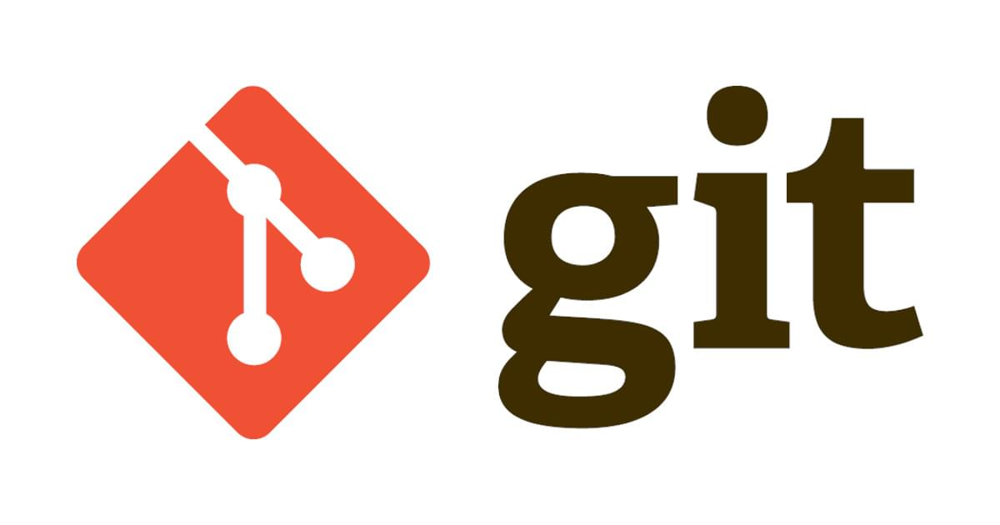

<!DOCTYPE html><html><head><meta charset="utf-8"><title>深入 Git：Git 物件儲存 - blob 物件 | Titangene Blog</title><meta http-equiv="X-UA-Compatible" content="IE=edge"><meta name="viewport" content="width=device-width,initial-scale=1,maximum-scale=1"><meta name="HandheldFriendly" content="True"><meta name="apple-mobile-web-app-capable" content="yes"><meta name="author" content="Titangene"><link rel="shortcut icon" href="/favicon.ico"><link rel="alternate" href="/atom.xml" title="Titangene Blog"><meta name="description" content="本篇將深入探討 Git 如何運作，在執行 git add 將檔案加入 index 時，Git 會如何建立和儲存 blob 物件。"><meta property="og:type" content="article"><meta property="og:title" content="深入 Git：Git 物件儲存 - blob 物件"><meta property="og:url" content="https://titangene.github.io/article/git--blob-object.html"><meta property="og:site_name" content="Titangene Blog"><meta property="og:description" content="本篇將深入探討 Git 如何運作，在執行 git add 將檔案加入 index 時，Git 會如何建立和儲存 blob 物件。"><meta property="og:locale" content="zh_TW"><meta property="og:image" content="https://titangene.github.io/images/cover/git.jpg"><meta property="article:published_time" content="2020-02-16T15:56:20.000Z"><meta property="article:modified_time" content="2020-09-20T07:11:52.950Z"><meta property="article:author" content="Titangene"><meta property="article:tag" content="w3HexSchool"><meta property="article:tag" content="深入 Git"><meta name="twitter:card" content="summary_large_image"><meta name="twitter:image" content="https://titangene.github.io/images/cover/git.jpg"><meta name="twitter:creator" content="@titangeneTW"><meta name="twitter:site" content="@titangene_blog"><meta property="fb:admins" content="100001106016019"><meta property="fb:app_id" content="2470546159839111"><meta property="og:image:width" content="1200"><meta property="og:image:height" content="630"><meta name="google-site-verification" content="AaJ39L7h-nWwJjXJMhAMtXSF6H6BUgGWXC80kYvLic8"><link href="https://fonts.googleapis.com/css2?family=Roboto&display=swap" rel="stylesheet"><link href="https://fonts.googleapis.com/css?family=Source+Code+Pro&display=swap" rel="stylesheet"><link rel="stylesheet" href="https://cdnjs.cloudflare.com/ajax/libs/font-awesome/5.13.0/css/all.min.css"><link rel="stylesheet" href="https://unpkg.com/gitalk/dist/gitalk.css"><link rel="stylesheet" href="/style.css"><script async src="https://www.googletagmanager.com/gtag/js?id=UA-129758206-1"></script><script>!function(a){function n(){dataLayer.push(arguments)}a.dataLayer=a.dataLayer||[],n("js",new Date),n("config","UA-129758206-1")}(window)</script><script>function setLoadingBarProgress(e){document.getElementById("loading-bar").style.width=e+"%"}</script><meta name="generator" content="Hexo 4.2.0"><link rel="alternate" href="/atom.xml" title="Titangene Blog" type="application/atom+xml"></head></html><body><div id="loading-bar-wrapper"><div id="loading-bar"></div></div><script>setLoadingBarProgress(20)</script><header class="l_header"><div class="wrapper"><div class="nav-main container container--flex"><a class="logo flat-box" href="/">Titangene Blog</a><div class="menu"><ul class="h-list"><li><a class="flat-box nav-home" href="/">Home</a></li><li><a class="flat-box nav-archives" href="/archives">Archives</a></li></ul><div class="underline"></div></div><div class="m_search"><form name="searchform" class="form u-search-form"><input type="text" class="input u-search-input" placeholder="Search"> <i class="fas fa-search"></i></form></div><ul class="switcher h-list"><li class="s-search"><a class="fas fa-search" href="javascript:void(0)"></a></li><li class="s-menu"><a class="fas fa-bars" href="javascript:void(0)"></a></li></ul></div><div class="nav-sub container container--flex"><a class="logo flat-box" href="/">Titangene Blog</a><ul class="switcher h-list"><li class="s-comment"><a class="far fa-comment-alt" href="javascript:void(0)"></a></li><li class="s-top"><a class="fas fa-arrow-up" href="javascript:void(0)"></a></li><li class="s-toc"><a class="fas fa-list-ol" href="javascript:void(0)"></a></li></ul></div></div></header><aside class="menu-phone"><nav><a href="/" class="nav-home nav">Home </a><a href="/archives" class="nav-archives nav">Archives</a></nav></aside><script>setLoadingBarProgress(40)</script><div class="l_body"><div class="container clearfix"><div class="l_main"><article id="post-git--blob-object" class="post white-box article-type-post" itemscope itemprop="blogPost"><section class="meta"><h2 class="title"><a href="/article/git--blob-object.html">深入 Git：Git 物件儲存 - blob 物件</a></h2><span class="post-time"><span class="post-meta-item-icon"><i class="fa fa-calendar"></i> </span><span class="post-meta-item-text">發表於</span> <time title="建立時間：2020-02-16 23:56:20" itemprop="dateCreated datePublished" datetime="2020-02-16T23:56:20+08:00">2020-02-16 </time><span class="post-meta-divider">|</span> <span class="post-meta-item-icon"><i class="fa fa-calendar-check"></i> </span><span class="post-meta-item-text">更新於</span> <time title="修改時間：2020-09-20 15:11:52" itemprop="dateModified" datetime="2020-09-20T15:11:52+08:00">2020-09-20</time></span> <span class="comments-count"><span class="post-meta-divider">|</span> <span class="post-meta-item-icon"><i class="fas fa-comment"></i> </span><a href="https://titangene.github.io/article/git--blob-object.html#comments" class="article-comment-count">留言</a></span><div class="post-category"><span class="post-meta-item-icon"><i class="fa fa-folder"></i> </span><span class="post-meta-item-text">分類於</span> <span itemprop="about" itemscope itemtype="http://schema.org/Thing"><a href="/categories/git/" itemprop="url" rel="index"><span itemprop="name">Git</span></a></span></div></section><section class="toc-wrapper"><h3>目錄</h3><ol class="toc"><li class="toc-item toc-level-2"><a class="toc-link" href="#手動建立-blob-物件"><span class="toc-text">手動建立 blob 物件</span></a></li><li class="toc-item toc-level-2"><a class="toc-link" href="#使用-cat-file-指令察看物件資訊"><span class="toc-text">使用 cat-file 指令察看物件資訊</span></a></li><li class="toc-item toc-level-2"><a class="toc-link" href="#變更檔案內容後再次建立-blob-物件"><span class="toc-text">變更檔案內容後再次建立 blob 物件</span></a></li><li class="toc-item toc-level-2"><a class="toc-link" href="#建立內容相同，但檔名不同的檔案"><span class="toc-text">建立內容相同，但檔名不同的檔案</span></a></li><li class="toc-item toc-level-2"><a class="toc-link" href="#hash-object-計算物件名稱的演算法"><span class="toc-text">hash-object 計算物件名稱的演算法</span></a></li><li class="toc-item toc-level-2"><a class="toc-link" href="#實作-Git-物件名稱演算法"><span class="toc-text">實作 Git 物件名稱演算法</span></a></li><li class="toc-item toc-level-2"><a class="toc-link" href="#驗證-Git-物件"><span class="toc-text">驗證 Git 物件</span></a></li><li class="toc-item toc-level-2"><a class="toc-link" href="#SHA-1"><span class="toc-text">SHA-1</span></a></li></ol></section><section class="article typo"><div class="article-entry" itemprop="articleBody"><p></p><p>本篇將深入探討 Git 如何運作，在執行 <code>git add</code> 將檔案加入 index 時，Git 會如何建立和儲存 blob 物件。</p><a id="more"></a><p>Git 是一個 content-addressable (按內容定址，按檔案內容定位) 的檔案系統，這代表 Git 的核心是一個 key-value data store (資料儲存) <sup class="footnote-ref"><a href="#fn1" id="fnref1">[1]</a></sup>。我們只要提供檔案內容，Git 就會透過一些演算法計算成 key，未來就可透過該 key 來檢索出對應的內容。</p><p>Git 有四種 type (類型) 的物件：blob、tree、commit 和 tag。</p><p>下面會使用 <code>git hash-object</code> 這個底層指令來介紹物件名稱是如何產生的。</p><h2 id="手動建立-blob-物件"><a class="header-anchor" href="#手動建立-blob-物件"></a>手動建立 blob 物件</h2><p>首先，先執行 <code>git init</code> 初始化 repo：</p><figure class="highlight shell"><table><tr><td class="gutter"><pre><span class="line">1</span><br><span class="line">2</span><br></pre></td><td class="code"><pre><code class="hljs shell"><span class="hljs-meta">$</span><span class="bash"> git init</span><br>Initialized empty Git repository in /home/titan/project/git-demo/.git/<br></code></pre></td></tr></table></figure><p>初始化新的 repo 時，Git 會在 <code>.git</code> 目錄中初始化 <code>objects</code> 目錄，並在裡面建立 <code>pack</code> 和 <code>info</code> 子層的空目錄：</p><figure class="highlight shell"><table><tr><td class="gutter"><pre><span class="line">1</span><br><span class="line">2</span><br><span class="line">3</span><br><span class="line">4</span><br></pre></td><td class="code"><pre><code class="hljs shell"><span class="hljs-meta">$</span><span class="bash"> tree .git/objects</span><br>.git/objects<br>├── info<br>└── pack<br></code></pre></td></tr></table></figure><p>使用底層指令 <code>hash-object</code> 將資料儲存至 <code>.git</code> 目錄中，並獲得對應的 key (也就是物件名稱，或稱 SHA-1 值)。下面是 <code>hash-object</code> 的 option：</p><ul><li><code>-w</code>：<ul><li>將物件寫入至物件資料庫 (也就是 <code>.git/objects</code> 目錄內)，並輸出該物件的 key (也就是 SHA-1 checksum)</li><li>若不用此 option，就只會輸出 key，不會儲存物件</li></ul></li><li><code>--stdin</code>：<ul><li>從 stdin (standard input，標準輸入) 讀取內容</li><li>若不用此 option，<code>hash-object</code> 指令預設會從檔案中讀取，所以必須在 <code>hash-object</code> 指令之後加上指定的檔案路徑<ul><li>例如：<code>git hash-object README.md</code></li></ul></li></ul></li></ul><figure class="highlight shell"><table><tr><td class="gutter"><pre><span class="line">1</span><br><span class="line">2</span><br></pre></td><td class="code"><pre><code class="hljs shell"><span class="hljs-meta">$</span><span class="bash"> <span class="hljs-built_in">echo</span> <span class="hljs-string">'test content'</span> | git <span class="hljs-built_in">hash</span>-object -w --stdin</span><br>d670460b4b4aece5915caf5c68d12f560a9fe3e4<br></code></pre></td></tr></table></figure><p><code>hash-object</code> 指令會輸出 40 個字元的 checksum hash，這是個 SHA-1 hash (後面會介紹 <a href="#SHA-1">SHA-1</a>)，是由儲存的內容和 header 資訊所計算出來的 checksum。</p><p>在 Git 的儲存方式是一份內容就存成一個檔案，都放在 <code>.git/objects</code> 目錄內，子目錄為 SHA-1 的前 2 個字元，檔名為剩餘的 38 個字元。</p><figure class="highlight shell"><table><tr><td class="gutter"><pre><span class="line">1</span><br><span class="line">2</span><br><span class="line">3</span><br><span class="line">4</span><br><span class="line">5</span><br><span class="line">6</span><br></pre></td><td class="code"><pre><code class="hljs shell"><span class="hljs-meta">$</span><span class="bash"> tree .git/objects</span><br>.git/objects<br>├── d6<br>│   └── 70460b4b4aece5915caf5c68d12f560a9fe3e4<br>├── info<br>└── pack<br></code></pre></td></tr></table></figure><h2 id="使用-cat-file-指令察看物件資訊"><a class="header-anchor" href="#使用-cat-file-指令察看物件資訊"></a>使用 <code>cat-file</code> 指令察看物件資訊</h2><p>使用 <code>cat-file</code> 指令取得物件的內容，可用於檢查物件。使用 <code>-p</code> option 找出內容的 type 並輸出該內容：</p><figure class="highlight shell"><table><tr><td class="gutter"><pre><span class="line">1</span><br><span class="line">2</span><br></pre></td><td class="code"><pre><code class="hljs shell"><span class="hljs-meta">$</span><span class="bash"> git cat-file -p d67046</span><br>test content<br></code></pre></td></tr></table></figure><p>使用 <code>-t</code> option 可獲得該物件的 type：</p><figure class="highlight shell"><table><tr><td class="gutter"><pre><span class="line">1</span><br><span class="line">2</span><br></pre></td><td class="code"><pre><code class="hljs shell"><span class="hljs-meta">$</span><span class="bash"> git cat-file -t d67046</span><br>blob<br></code></pre></td></tr></table></figure><p>剛剛建立的 <code>d67046</code> 就是 Git 的 blob 物件。</p><h2 id="變更檔案內容後再次建立-blob-物件"><a class="header-anchor" href="#變更檔案內容後再次建立-blob-物件"></a>變更檔案內容後再次建立 blob 物件</h2><p>那如果變更檔案內容後，再建立 blob 物件又會如何？看下面範例：</p><p>先建立一個全新的專案，並使用 <code>git init</code> 初始化 Git repo：</p><figure class="highlight shell"><table><tr><td class="gutter"><pre><span class="line">1</span><br><span class="line">2</span><br><span class="line">3</span><br><span class="line">4</span><br></pre></td><td class="code"><pre><code class="hljs shell"><span class="hljs-meta">$</span><span class="bash"> mkdir git-demo-2</span><br><span class="hljs-meta">$</span><span class="bash"> <span class="hljs-built_in">cd</span> git-demo-2</span><br><span class="hljs-meta">$</span><span class="bash"> git init</span><br>Initialized empty Git repository in /home/titan/project/git-demo-2/.git/<br></code></pre></td></tr></table></figure><p>接著建立一個名為 <code>test.txt</code> 的檔案，內容為 <code>v1</code>，使用 <code>git hash-object</code> 建立的 blob 物件為 <code>626799</code>，後來將內容修改為 <code>v2</code>，再次建立的 blob 物件為 <code>8c1384</code>：</p><figure class="highlight shell"><table><tr><td class="gutter"><pre><span class="line">1</span><br><span class="line">2</span><br><span class="line">3</span><br><span class="line">4</span><br><span class="line">5</span><br><span class="line">6</span><br><span class="line">7</span><br><span class="line">8</span><br><span class="line">9</span><br><span class="line">10</span><br><span class="line">11</span><br><span class="line">12</span><br><span class="line">13</span><br></pre></td><td class="code"><pre><code class="hljs shell"><span class="hljs-meta">$</span><span class="bash"> <span class="hljs-built_in">echo</span> <span class="hljs-string">'v1'</span> &gt; test.txt</span><br><span class="hljs-meta">$</span><span class="bash"> git <span class="hljs-built_in">hash</span>-object -w test.txt</span><br>626799f0f85326a8c1fc522db584e86cdfccd51f<br><br><span class="hljs-meta">$</span><span class="bash"> git cat-file -t 626799</span><br>blob<br><br><span class="hljs-meta">$</span><span class="bash"> <span class="hljs-built_in">echo</span> <span class="hljs-string">'v2'</span> &gt; test.txt</span><br><span class="hljs-meta">$</span><span class="bash"> git <span class="hljs-built_in">hash</span>-object -w test.txt</span><br>8c1384d825dbbe41309b7dc18ee7991a9085c46e<br><br><span class="hljs-meta">$</span><span class="bash"> git cat-file -t 8c1384</span><br>blob<br></code></pre></td></tr></table></figure><p>可以看到當檔案內容不同時，就可以產生不同的 blob 物件：</p><figure class="highlight shell"><table><tr><td class="gutter"><pre><span class="line">1</span><br><span class="line">2</span><br><span class="line">3</span><br><span class="line">4</span><br><span class="line">5</span><br><span class="line">6</span><br><span class="line">7</span><br><span class="line">8</span><br></pre></td><td class="code"><pre><code class="hljs shell"><span class="hljs-meta">$</span><span class="bash"> tree .git/objects</span><br>.git/objects<br>├── 62<br>│   └── 6799f0f85326a8c1fc522db584e86cdfccd51f<br>├── 8c<br>│   └── 1384d825dbbe41309b7dc18ee7991a9085c46e<br>├── info<br>└── pack<br></code></pre></td></tr></table></figure><h2 id="建立內容相同，但檔名不同的檔案"><a class="header-anchor" href="#建立內容相同，但檔名不同的檔案"></a>建立內容相同，但檔名不同的檔案</h2><p>當你建立檔案內容相同，但檔名不同的檔案時，在 repo 內也只會存一份，因為物件的名稱是由檔案內容來決定的，而不是依檔名決定。</p><p>不過，<code>git hash-object</code> 指令還是會重新產生同一個 blob 物件 (因為該物件的檔案時間被更新了)。範例如下：</p><p>在建立 <code>other-test.txt</code> 檔案之前，<code>.git/objects/8c/6799f...</code> 的檔案時間是 <code>23:38</code>：</p><figure class="highlight shell"><table><tr><td class="gutter"><pre><span class="line">1</span><br><span class="line">2</span><br><span class="line">3</span><br><span class="line">4</span><br><span class="line">5</span><br><span class="line">6</span><br><span class="line">7</span><br><span class="line">8</span><br><span class="line">9</span><br><span class="line">10</span><br><span class="line">11</span><br><span class="line">12</span><br><span class="line">13</span><br><span class="line">14</span><br><span class="line">15</span><br><span class="line">16</span><br><span class="line">17</span><br><span class="line">18</span><br><span class="line">19</span><br><span class="line">20</span><br><span class="line">21</span><br><span class="line">22</span><br><span class="line">23</span><br><span class="line">24</span><br><span class="line">25</span><br><span class="line">26</span><br></pre></td><td class="code"><pre><code class="hljs shell"><span class="hljs-meta">$</span><span class="bash"> tree .git/objects</span><br>.git/objects<br>├── 62<br>│   └── 6799f0f85326a8c1fc522db584e86cdfccd51f<br>├── 8c<br>│   └── 1384d825dbbe41309b7dc18ee7991a9085c46e<br>├── info<br>└── pack<br><br><span class="hljs-meta">$</span><span class="bash"> ls -lR .git/objects</span><br>.git/objects:<br>總計 16<br>drwxr-xr-x 2 titan titan 4096  2月 16 23:39 62<br>drwxr-xr-x 2 titan titan 4096  2月 16 23:40 8c<br>drwxr-xr-x 2 titan titan 4096  2月 16 23:39 info<br>drwxr-xr-x 2 titan titan 4096  2月 16 23:39 pack<br><br>.git/objects/62:<br>總計 4<br>-r--r--r-- 1 titan titan 18  2月 16 23:38 6799f0f85326a8c1fc522db584e86cdfccd51f<br><br>.git/objects/8c:<br>總計 4<br>-r--r--r-- 1 titan titan 18  2月 16 23:39 1384d825dbbe41309b7dc18ee7991a9085c46e<br><br>...<br></code></pre></td></tr></table></figure><p>在建立 <code>other-test.txt</code> 檔案之後，<code>.git/objects/8c/6799f...</code> 的檔案時間變成 <code>23:40</code>：</p><figure class="highlight shell"><table><tr><td class="gutter"><pre><span class="line">1</span><br><span class="line">2</span><br><span class="line">3</span><br><span class="line">4</span><br><span class="line">5</span><br><span class="line">6</span><br><span class="line">7</span><br><span class="line">8</span><br><span class="line">9</span><br><span class="line">10</span><br><span class="line">11</span><br><span class="line">12</span><br><span class="line">13</span><br><span class="line">14</span><br><span class="line">15</span><br><span class="line">16</span><br><span class="line">17</span><br><span class="line">18</span><br><span class="line">19</span><br><span class="line">20</span><br><span class="line">21</span><br><span class="line">22</span><br><span class="line">23</span><br><span class="line">24</span><br><span class="line">25</span><br><span class="line">26</span><br><span class="line">27</span><br><span class="line">28</span><br><span class="line">29</span><br><span class="line">30</span><br></pre></td><td class="code"><pre><code class="hljs shell"><span class="hljs-meta">$</span><span class="bash"> <span class="hljs-built_in">echo</span> <span class="hljs-string">'v2'</span> &gt; other-test.txt</span><br><span class="hljs-meta">$</span><span class="bash"> git <span class="hljs-built_in">hash</span>-object -w other-test.txt</span><br>8c1384d825dbbe41309b7dc18ee7991a9085c46e<br><br><span class="hljs-meta">$</span><span class="bash"> tree .git/objects</span><br>.git/objects<br>├── 62<br>│   └── 6799f0f85326a8c1fc522db584e86cdfccd51f<br>├── 8c<br>│   └── 1384d825dbbe41309b7dc18ee7991a9085c46e<br>├── info<br>└── pack<br><br><span class="hljs-meta">$</span><span class="bash"> ls -lR .git/objects</span><br>.git/objects:<br>總計 16<br>drwxr-xr-x 2 titan titan 4096  2月 16 23:39 62<br>drwxr-xr-x 2 titan titan 4096  2月 16 23:40 8c<br>drwxr-xr-x 2 titan titan 4096  2月 16 23:39 info<br>drwxr-xr-x 2 titan titan 4096  2月 16 23:39 pack<br><br>.git/objects/62:<br>總計 4<br>-r--r--r-- 1 titan titan 18  2月 16 23:40 6799f0f85326a8c1fc522db584e86cdfccd51f<br><br>.git/objects/8c:<br>總計 4<br>-r--r--r-- 1 titan titan 18  2月 16 23:39 1384d825dbbe41309b7dc18ee7991a9085c46e<br><br>...<br></code></pre></td></tr></table></figure><h2 id="hash-object-計算物件名稱的演算法"><a class="header-anchor" href="#hash-object-計算物件名稱的演算法"></a><code>hash-object</code> 計算物件名稱的演算法</h2><p>那 Git 的物件名稱 (也就是 SHA-1) 是如何計算的？不同的 Git 物件有不同的計算方式，這邊先說明 blob 物件的部份。</p><p>Git 物件都是使用 <a href="https://www.zlib.net/" target="_blank" rel="noopener">zlib</a> 壓縮，物件名稱的 SHA-1 hash 值就是 header 加上檔案內容，演算法如下 <sup class="footnote-ref"><a href="#fn2" id="fnref2">[2]</a></sup>：</p><figure class="highlight plain"><table><tr><td class="gutter"><pre><span class="line">1</span><br></pre></td><td class="code"><pre><code class="hljs plain">&lt;type&gt; &lt;content_length&gt;\0&lt;content&gt;<br></code></pre></td></tr></table></figure><p>前面的 <code>&lt;type&gt; &lt;content_length&gt;\0</code> 代表 header，而 <code>&lt;content&gt;</code> 代表檔案內容。下面舉個例子：</p><p>建立名為 <code>hello.txt</code> 的檔案，檔案內容為 <code>hello</code>：</p><figure class="highlight shell"><table><tr><td class="gutter"><pre><span class="line">1</span><br></pre></td><td class="code"><pre><code class="hljs shell"><span class="hljs-meta">$</span><span class="bash"> <span class="hljs-built_in">echo</span> <span class="hljs-string">"hello"</span> &gt; hello.txt</span><br></code></pre></td></tr></table></figure><p>使用 <code>cat</code> 指令並加上 <code>-A</code> 選項察看檔案內容：</p><ul><li><code>-A</code>：相當於 <code>-vET</code> 整合選項</li><li><code>-E</code>：將結尾的斷行字元以 <code>$</code> 顯示</li><li><code>-T</code>：將 TAB 字元以 <code>^I</code> 顯示</li><li><code>-v</code>：除了換行及 TAB 字元外，使用 <code>^</code> 及 <code>M-</code> 表示法顯示字元 (列出一些看不出來的特殊字元)</li></ul><figure class="highlight shell"><table><tr><td class="gutter"><pre><span class="line">1</span><br><span class="line">2</span><br></pre></td><td class="code"><pre><code class="hljs shell"><span class="hljs-meta">$</span><span class="bash"> cat -A hello.txt</span><br><span class="hljs-meta">hello%</span><br></code></pre></td></tr></table></figure><p>檔案內容的結尾 <code>%</code> 代表 LF (line Feed，<code>\n</code> )，我是在 Linux 建立 <code>hello.txt</code> 此檔案的，而 Linux 的換行字元是使用 LF 字元，所以在每一行的結尾才會多了 LF 這個字元。</p><p>所以依照上面建立物件名稱的演算法就會像這樣，下面分別代表：</p><ul><li><code>blob</code>：要建立的物件是 blob 物件</li><li><code>6</code>：檔案內容長度</li><li><code>\0</code>：Null 結束字元</li><li><code>hello\n</code>：檔案內容</li></ul><figure class="highlight shell"><table><tr><td class="gutter"><pre><span class="line">1</span><br></pre></td><td class="code"><pre><code class="hljs shell">blob 6\0hello\n<br></code></pre></td></tr></table></figure><p>所以如果使用以下指令就能算出此 blob 物件的 SHA-1 hash 值：</p><ul><li><code>echo</code> 的 <code>-n</code> 選項：不輸出結尾的換行字元 (trailing newline)</li><li><code>sha1sum</code>：計算 SHA-1 值</li></ul><figure class="highlight shell"><table><tr><td class="gutter"><pre><span class="line">1</span><br><span class="line">2</span><br></pre></td><td class="code"><pre><code class="hljs shell"><span class="hljs-meta">$</span><span class="bash"> <span class="hljs-built_in">echo</span> -n <span class="hljs-string">"blob 6\0hello\n"</span> | sha1sum </span><br>ce013625030ba8dba906f756967f9e9ca394464a<br></code></pre></td></tr></table></figure><h2 id="實作-Git-物件名稱演算法"><a class="header-anchor" href="#實作-Git-物件名稱演算法"></a>實作 Git 物件名稱演算法</h2><p>如果用 Python 實作此演算法：</p><figure class="highlight python"><table><tr><td class="gutter"><pre><span class="line">1</span><br><span class="line">2</span><br><span class="line">3</span><br><span class="line">4</span><br><span class="line">5</span><br><span class="line">6</span><br><span class="line">7</span><br><span class="line">8</span><br><span class="line">9</span><br><span class="line">10</span><br><span class="line">11</span><br><span class="line">12</span><br><span class="line">13</span><br><span class="line">14</span><br><span class="line">15</span><br></pre></td><td class="code"><pre><code class="hljs python"><span class="hljs-keyword">import</span> os<br><span class="hljs-keyword">import</span> zlib<br><span class="hljs-keyword">from</span> hashlib <span class="hljs-keyword">import</span> sha1<br><br>content = <span class="hljs-string">'hello\n'</span><br>header = <span class="hljs-string">'blob &#123;&#125;\0'</span>.format(len(content))<br>store = header + content<br>hash = sha1(store.encode(<span class="hljs-string">'utf-8'</span>)).hexdigest()<br><br>zlib_content = zlib.compress(store.encode(<span class="hljs-string">'utf-8'</span>))<br><br>path = <span class="hljs-string">'.git/objects/&#123;&#125;/&#123;&#125;'</span>.format(hash[:<span class="hljs-number">2</span>], hash[<span class="hljs-number">2</span>:])<br>os.makedirs(os.path.dirname(path), exist_ok=<span class="hljs-literal">True</span>)<br><span class="hljs-keyword">with</span> open(path, <span class="hljs-string">'wb+'</span>) <span class="hljs-keyword">as</span> file:<br>    file.write(zlib_content)<br></code></pre></td></tr></table></figure><p>驗證剛剛實作的 blob 物件是否有效：</p><figure class="highlight shell"><table><tr><td class="gutter"><pre><span class="line">1</span><br><span class="line">2</span><br></pre></td><td class="code"><pre><code class="hljs shell"><span class="hljs-meta">$</span><span class="bash"> git cat-file -p ce0136</span><br>hello<br></code></pre></td></tr></table></figure><p>看到檔案內容就代表實作成功 😃。</p><h2 id="驗證-Git-物件"><a class="header-anchor" href="#驗證-Git-物件"></a>驗證 Git 物件</h2><p>Git 物件名稱可以用來檢查物件的 type 和物件內容是否一致，如果 Git 物件的檔案名稱或內容被惡意修改，就可以很容易的發現有錯誤。</p><p>Git 可用 <code>git fsck</code> 指令來如何驗證資料庫中的物件是否有效，如果驗證成功就會像這樣輸出：</p><figure class="highlight shell"><table><tr><td class="gutter"><pre><span class="line">1</span><br><span class="line">2</span><br></pre></td><td class="code"><pre><code class="hljs shell"><span class="hljs-meta">$</span><span class="bash"> git fsck</span><br>Checking object directories: 100% (256/256), done.<br></code></pre></td></tr></table></figure><p>假設我惡意修改剛剛建立的 blob 物件，使用 <code>git fsck</code> 指令就會告知該物件有問題：</p><figure class="highlight shell"><table><tr><td class="gutter"><pre><span class="line">1</span><br><span class="line">2</span><br><span class="line">3</span><br><span class="line">4</span><br><span class="line">5</span><br><span class="line">6</span><br><span class="line">7</span><br></pre></td><td class="code"><pre><code class="hljs shell"><span class="hljs-meta">$</span><span class="bash"> vim .git/objects/ce/013625030ba8dba906f756967f9e9ca394464a</span><br><span class="hljs-meta">$</span><span class="bash"> git fsck</span><br>error: inflate: data stream error (incorrect header check)<br>error: unable to unpack header of .git/objects/ce/013625030ba8dba906f756967f9e9ca394464a<br>error: ce013625030ba8dba906f756967f9e9ca394464a: object corrupt or missing: .git/objects/ce/013625030ba8dba906f756967f9e9ca394464a<br>Checking object directories: 100% (256/256), done.<br>missing blob ce013625030ba8dba906f756967f9e9ca394464a<br></code></pre></td></tr></table></figure><h2 id="SHA-1"><a class="header-anchor" href="#SHA-1"></a>SHA-1</h2><p>SHA-1 (Secure Hash Algorithm 1) 是一種 hash (雜湊) 演算法，它可生成 160 bit (20 byte) 的 hash 值，通常以 40 個十六進位 (hex) 的數字表示 <sup class="footnote-ref"><a href="#fn3" id="fnref3">[3]</a></sup>。</p><p>hash 演算法的特性 <sup class="footnote-ref"><a href="#fn4" id="fnref4">[4]</a></sup>：</p><ul><li>給定訊息很容易計算出 hash 值</li><li>很難用已知的 hash 值推算出原始訊息</li><li>很難修改訊息而 hash 值不變</li><li>很難讓不同的訊息有相同的 hash 值</li></ul><p>所以 Git 有以下優點 <sup class="footnote-ref"><a href="#fn5" id="fnref5">[5]</a></sup>：</p><ul><li>Git 可透過比較物件名稱 (也就是 SHA-1) 來快速確定兩個物件是否相同</li><li>在每個 repo 中都以相同的方式計算物件名稱，所以儲存在不同 repo 內的相同內容會以相同的名稱來儲存</li><li>可以透過檢查物件名稱來確認其內容的 SHA-1 hash 值，Git 可在讀取物件時檢查錯誤</li></ul><hr class="footnotes-sep"><section class="footnotes"><ol class="footnotes-list"><li id="fn1" class="footnote-item"><p><a href="https://git-scm.com/book/zh-tw/v2/Git-Internals-Git-Objects" target="_blank" rel="noopener">Git Internals - Git Objects | Pro Git 2/e</a> <a href="#fnref1" class="footnote-backref">↩︎</a></p></li><li id="fn2" class="footnote-item"><p><a href="https://git-scm.com/docs/user-manual#object-details" target="_blank" rel="noopener">Git - user-manual Documentation</a> <a href="#fnref2" class="footnote-backref">↩︎</a></p></li><li id="fn3" class="footnote-item"><p><a href="https://zh.wikipedia.org/wiki/SHA-1" target="_blank" rel="noopener">SHA-1 - Wiki</a> <a href="#fnref3" class="footnote-backref">↩︎</a></p></li><li id="fn4" class="footnote-item"><p><a href="https://zh.wikipedia.org/wiki/%E5%AF%86%E7%A2%BC%E9%9B%9C%E6%B9%8A%E5%87%BD%E6%95%B8" target="_blank" rel="noopener">密碼雜湊函式 - Wiki</a> <a href="#fnref4" class="footnote-backref">↩︎</a></p></li><li id="fn5" class="footnote-item"><p><a href="https://git-scm.com/docs/user-manual#the-object-database" target="_blank" rel="noopener">Git - user-manual Documentation</a> <a href="#fnref5" class="footnote-backref">↩︎</a></p></li></ol></section></div><div class="article-tags tags"><a href="/tags/w3hexschool/" title="w3HexSchool">w3HexSchool</a> <a href="/tags/%E6%B7%B1%E5%85%A5-git/" title="深入 Git">深入 Git</a></div></section><div class="article-share-links"><span>分享：</span> <a class="fab fa-facebook-f" title="Facebook" target="_blank" href="https://www.facebook.com/sharer.php?u=https%3A%2F%2Ftitangene.github.io%2Farticle%2Fgit--blob-object.html"></a> <a class="fab fa-twitter" title="Twitter" target="_blank" href="https://twitter.com/share?url=https%3A%2F%2Ftitangene.github.io%2Farticle%2Fgit--blob-object.html&amp;text=深入 Git：Git 物件儲存 - blob 物件&amp;hashtags=w3HexSchool,深入Git&amp;via=titangene_blog"></a> <a class="fab fa-linkedin-in" title="Linkedin" target="_blank" href="https://www.linkedin.com/sharing/share-offsite/?url=https%3A%2F%2Ftitangene.github.io%2Farticle%2Fgit--blob-object.html"></a> <a class="fab fa-facebook-messenger" title="Facebook Messenger" target="_blank" href="http://www.facebook.com/dialog/send?app_id=2470546159839111&amp;link=https%3A%2F%2Ftitangene.github.io%2Farticle%2Fgit--blob-object.html&amp;display=popup&amp;redirect_uri=https%3A%2F%2Fwww.facebook.com%2Fdialog%2Freturn%2Fclose%23_%3D_"></a> <a class="fab fa-telegram-plane" href="https://telegram.me/share/url?url=https%3A%2F%2Ftitangene.github.io%2Farticle%2Fgit--blob-object.html&text=深入 Git：Git 物件儲存 - blob 物件" target="_blank"></a></div><nav id="article-nav"><a href="/article/git-delete-remote-branch.html" id="article-nav-prev" class="article-nav-link-wrap" title="Git - 刪除遠端分支 (以 GitHub、GitLab 為例)" rel="prev"><strong class="article-nav-caption">Prev</strong><p class="article-nav-title">Git - 刪除遠端分支 (以 GitHub、GitLab 為例)</p><i class="fas fa-angle-left"></i> </a><a href="/article/git-auto-crlf.html" id="article-nav-next" class="article-nav-link-wrap" title="處理 Git 斷行字元的問題" rel="next"><strong class="article-nav-caption">Next</strong><p class="article-nav-title">處理 Git 斷行字元的問題</p><i class="fas fa-angle-right"></i></a></nav><section id="list_related_posts"><h2>相關文章</h2><ul class="related-posts"><li class="related-posts-item"><a class="related-posts-link" href="/article/git-tag-object.html">深入 Git：Git 物件儲存 - tag 物件</a><div class="related-posts-item-abstract">本篇將深入探討 Git tag 是什麼？如何建立 tag？Git 是如何儲存 tag？與 commit 和分支的差別在哪？Git tagGit tag 常用於標記某個版本號碼，例如：v0.5、v1.0.1、9.1.0-r</div></li><li class="related-posts-item"><a class="related-posts-link" href="/article/git-branch-ref.html">深入 Git：分支 refs</a><div class="related-posts-item-abstract">本篇將深入探討 Git 分支到底是什麼？建立分支時到底建立了什麼？如何紀錄分支要指向哪個 commit？Git 參考 (references 或 refs) 都存在 .git/refs 目錄內，目錄結構如下：123456</div></li><li class="related-posts-item"><a class="related-posts-link" href="/article/git-index.html">深入 Git：index 檔案</a><div class="related-posts-item-abstract">git add 會將檔案加入 index，究竟 index 到底存在哪？其實，通常會放在 .git/index，本篇將深入探討此檔案式如何紀錄有哪些檔案被加入 index。index 是一個二進位檔案，通常放在 .git</div></li><li class="related-posts-item"><a class="related-posts-link" href="/article/git-head-ref.html">深入 Git：HEAD refs</a><div class="related-posts-item-abstract">本篇將深入探討 Git HEAD 是什麼？儲存在 repo 的哪裡？以及跟 git branch 和 git checkout 之間的關係。上次提到的 Git 分支 ref，可用來紀錄不同的工作過程，例如最常見的 mas</div></li><li class="related-posts-item"><a class="related-posts-link" href="/article/git-commit-object.html">深入 Git：Git 物件儲存 - commit 物件</a><div class="related-posts-item-abstract">本篇將深入探討 Git 如何運作，在執行 git commit 時，Git 會如何建立和儲存 commit 物件。tree 物件會指向追蹤專案的不同 snapshot，若要取得這些 snapshot 就會遇到一些問題：必</div></li><li class="related-posts-item"><a class="related-posts-link" href="/article/git-tree-object.html">深入 Git：Git 物件儲存 - tree 物件</a><div class="related-posts-item-abstract">本篇將深入探討 Git 如何運作，Git 是如何建立和儲存 tree 物件。之前講到 blob 物件是由檔案內容來產生的，那 Git 是如何知道這些檔案內容是分別存在哪個目錄內的檔案名稱中？目錄名稱和檔案名稱就是由 tr</div></li></ul></section><section class="comments" id="comments"><h2>討論區</h2><div id="gitalk-container"></div></section></article><script>window.subData={title:"深入 Git：Git 物件儲存 - blob 物件",tools:!0}</script></div><aside class="l_side"><section class="m_widget about"><div class="avatar-section"><style>.avatar-cover{background:url(/images/avatar_cover.jpg) 0 10%/cover no-repeat}</style><div class="avatar-cover"></div></div><div class="header">Titangene</div><div class="content"><div class="desc">利用 blog 紀錄學習歷程</div></div><div class="content"><meta itemprop="url" content="https://titangene.github.io"><div class="social-wrapper"><a itemprop="sameAs" href="https://github.com/titangene" class="social github" target="_blank" rel="external"><span class="fab fa-github-alt"></span> </a><a itemprop="sameAs" href="https://www.facebook.com/titangene.tw" class="social facebook" target="_blank" rel="external"><span class="fab fa-facebook-square"></span> </a><a itemprop="sameAs" href="https://www.instagram.com/titangene/" class="social instagram" target="_blank" rel="external"><span class="fab fa-instagram"></span> </a><a itemprop="sameAs" href="https://www.flickr.com/photos/titangene" class="social flickr" target="_blank" rel="external"><span class="fab fa-flickr"></span> </a><a itemprop="sameAs" href="/atom.xml" class="social rss" target="_blank" rel="external"><span class="fas fa-rss"></span></a></div></div></section><section class="m_widget facebook_page"><div class="fb-page" data-href="https://www.facebook.com/titangene.blog/" data-width="250" data-small-header="false" data-adapt-container-width="false" data-hide-cover="false" data-show-facepile="true"><blockquote cite="https://www.facebook.com/titangene.blog/" class="fb-xfbml-parse-ignore"><p><a href="https://www.facebook.com/titangene.blog/" class="social facebook" target="_blank"><span class="fab fa-facebook-square"></span></a></p><p><a href="https://www.facebook.com/titangene.blog/" target="_blank" rel="noopener">Titangene Blog</a></p><p>Loading...</p></blockquote></div></section><section class="m_widget recent"><div class="header">Recents</div><div class="content"><ul class="entry"><li><a itemprop="url" class="flat-box" href="/article/javascript-promise-any-aggregateerror.html"><time>2020-10-12</time><div class="name">JavaScript 之旅 (27)：Promise.any() &amp; AggregateError</div></a></li><li><a itemprop="url" class="flat-box" href="/article/javascript-bigint.html"><time>2020-10-07</time><div class="name">JavaScript 之旅 (22)：BigInt</div></a></li><li><a itemprop="url" class="flat-box" href="/article/javascript-object-rest-spread-properties.html"><time>2020-09-28</time><div class="name">JavaScript 之旅 (13)：Object Rest/Spread Properties</div></a></li><li><a itemprop="url" class="flat-box" href="/article/javascript-promise-finally.html"><time>2020-09-23</time><div class="name">JavaScript 之旅 (8)：Promise.prototype.finally()</div></a></li><li><a itemprop="url" class="flat-box" href="/article/javascript-string-padstart-padend.html"><time>2020-09-20</time><div class="name">JavaScript 之旅 (5)：String method - padStart &amp; padEnd</div></a></li><li><a itemprop="url" class="flat-box" href="/article/javascript-object-keys-values-entries.html"><time>2020-09-19</time><div class="name">JavaScript 之旅 (4)：Object.keys() &amp; Object.values() &amp; Object.entries()</div></a></li><li><a itemprop="url" class="flat-box" href="/article/javascript-exponentiation-operator.html"><time>2020-09-18</time><div class="name">JavaScript 之旅 (3)：Exponentiation Operator (指數運算子)</div></a></li></ul></div></section></aside><script>setLoadingBarProgress(60)</script></div></div><footer id="footer" class="clearfix"><div class="social-wrapper"><a href="https://github.com/titangene" class="social github" target="_blank" rel="external"><span class="fab fa-github-alt"></span> </a><a href="https://www.facebook.com/titangene.tw" class="social facebook" target="_blank" rel="external"><span class="fab fa-facebook-square"></span> </a><a href="https://www.instagram.com/titangene/" class="social instagram" target="_blank" rel="external"><span class="fab fa-instagram"></span> </a><a href="https://www.flickr.com/photos/titangene" class="social flickr" target="_blank" rel="external"><span class="fab fa-flickr"></span> </a><a href="/atom.xml" class="social rss" target="_blank" rel="external"><span class="fas fa-rss"></span></a></div><div>© 2018 - 2020 <span itemprop="copyrightHolder">Titangene</span></div><div>Powered by <a href="https://hexo.io/" target="_blank" class="codename" rel="external noopener">Hexo</a> - Theme <a href="https://github.com/stkevintan/hexo-theme-material-flow" target="_blank" class="codename" rel="external noopener">MaterialFlow</a></div><div><a rel="license noopener" href="http://creativecommons.org/licenses/by-nc-sa/4.0/" target="_blank" rel="external noopener"></a></div></footer><script>setLoadingBarProgress(80)</script><script src="//cdnjs.cloudflare.com/ajax/libs/jquery/2.1.4/jquery.min.js"></script><script src="https://cdnjs.cloudflare.com/ajax/libs/clipboard.js/2.0.0/clipboard.min.js"></script><script src="https://unpkg.com/gitalk/dist/gitalk.min.js"></script><script src="/js/jquery.fitvids.js"></script><script>var SEARCH_SERVICE="hexo",ROOT="/";ROOT.endsWith("/")||(ROOT+="/")</script><script src="/js/search.js"></script><script src="/js/app.js"></script><script src="/js/clipboard-use.js"></script><script type="text/javascript">var gitalk=new Gitalk({clientID:"dd1684f31ee17e25c22b",clientSecret:"4b51bb4a5996b04d58821a6e3da8558f23da4cdf",id:window.location.pathname,repo:"hexo-blog",owner:"titangene",admin:"titangene",distractionFreeMode:"true"});gitalk.render("gitalk-container")</script><div id="fb-root"></div><script>window.fbAsyncInit=function(){FB.init({appId:"2470546159839111",autoLogAppEvents:!0,xfbml:!0,version:"v2.11"}),FB.AppEvents.logPageView()},function(e,n,t){var o,s=e.getElementsByTagName(n)[0];e.getElementById(t)||((o=e.createElement(n)).id=t,o.src="//connect.facebook.net/zh_TW/sdk.js",s.parentNode.insertBefore(o,s))}(document,"script","facebook-jssdk")</script><script>setLoadingBarProgress(100)</script></body>